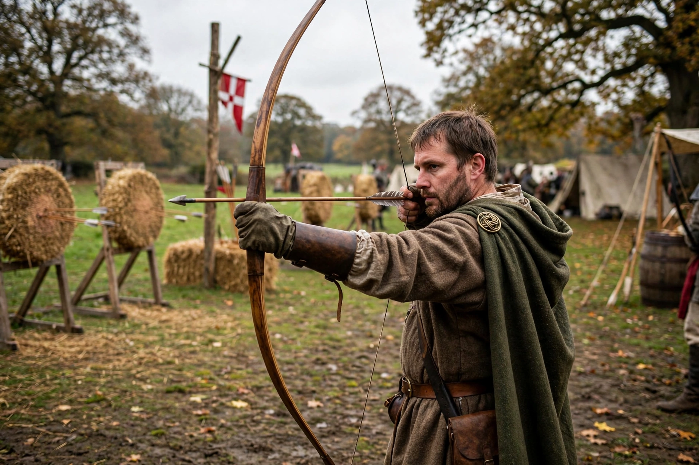

Longbow
From Wikipedia, the free encyclopedia
| Type | Bow |
|---|---|
| Place of origin | Europe (associated with Wales and England) |
| In service | Antiquity – 17th century |
| Length | approx. 1.8–2 m (6 ft) |
| Effective range | up to c. 300 m (volley fire) |

A longbow is a type of tall bow that makes a reasonably long draw possible. A longbow is not significantly recurved. Its limbs are relatively narrow and are circular or D-shaped in cross-section. Flatbows can be just as long, but in a flatbow the limbs are wide and flat. Longbows were historically fashioned from a single piece of wood — most famously English yew — and could loose arrows at a high rate with considerable penetrating power.
History
Bows of longbow type are ancient across Europe; the oldest surviving examples, such as the Holmegaard bows from Denmark, date to the Mesolithic. The weapon became iconic in the hands of Welsh and English archers during the Middle Ages. English longbowmen played decisive roles in the Hundred Years' War, contributing to victories at Crécy (1346), Poitiers (1356), and Agincourt (1415). War bows recovered from the Tudor warship Mary Rose, sunk in 1545, had draw weights estimated at 100–180 pounds.
Use and training
Mastering a war bow required a lifetime of practice; English law periodically required men to practice archery on Sundays and holidays, and massed archers typically shot in volleys rather than aiming at individual targets. A trained archer could loose ten to twelve arrows per minute. The longbow remained in military use into the 16th and 17th centuries before being displaced by firearms.